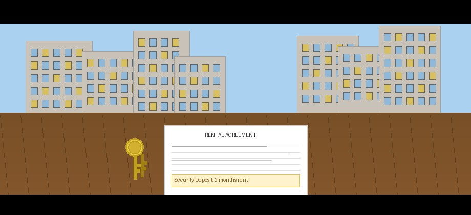

by two-wheeler (peak hour)
in Patia / Niladri Vihar
real commute + value
- How Infocity Connectivity Was Evaluated
- Rank #1 — Chandrasekharpur (Closest, Most Expensive)
- Rank #2 — Patia & Niladri Vihar (Best Value-to-Commute)
- Rank #3 — Sailashree Vihar (Underrated Middle Ground)
- Rank #4 — Nayapalli (Well-Connected City Veteran)
- Rank #5 — Pokhariput / Damana (Emerging Option)
- Head-to-Head Commute Comparison
- 2 BHK Rent Comparison — All Areas
- Schools for IT Professionals with Children
- Major Hospitals Quick Reference
- Mo Bus Routes to Infocity
- The Decision Framework — Which Area Is Right for You?
- Quick Summary Scorecard
🗺️ Before the Rankings — How Infocity Connectivity Was Evaluated
Infocity in Chandrasekharpur is Bhubaneswar's primary IT hub. It sits in the northwest quarter of the city, with KIIT Tech Park, Mindtree, Infosys, TCS, Wipro, and several smaller IT and ITES companies all concentrated within a few kilometres of each other. Getting to work in under 20 minutes versus spending 45–60 minutes in an auto or cab from the wrong part of the city has a compounding effect on quality of life that most people only appreciate after experiencing the difference.
Every area in this guide was assessed on:
- 1Commute time to Infocity Gate 1 during morning peak hour (8:30–9:30 AM) by two-wheeler, car, and cab. These are resident-reported times — not Google Maps estimates.
- 2Mo Bus route availability — for professionals who prefer public transport or don't own a vehicle.
- 3Rent range for a 2 BHK semi-furnished flat — the most common IT professional housing requirement.
- 4Proximity to essential services — grocery, pharmacy, bank, ATM, restaurant within practical distance.
- 5Overall livability — noise levels, green cover, safety reputation, and school access for families.
🏆 #1 — Chandrasekharpur (The Closest, The Most Expensive)
Chandrasekharpur is the IT professional's default choice for one simple reason: it is effectively built around the Infocity corridor. Several of the larger IT companies have their campuses on or adjacent to Chandrasekharpur's main road. Living here means you can, on most days, reach your office without touching a main highway. The area has matured significantly in the last decade — what was once a new township with patchy amenities is now a dense residential zone with good grocery options, restaurants, bank branches within walking distance, and functioning RWAs in most large housing complexes.
Rent Prices — Chandrasekharpur (2026)
| Flat Type | Unfurnished | Semi-Furnished | Fully Furnished |
|---|---|---|---|
| 1 BHK | ₹9,000–₹13,000 | ₹12,000–₹17,000 | ₹16,000–₹22,000 |
| 2 BHK | ₹14,000–₹20,000 | ₹18,000–₹28,000 | ₹25,000–₹38,000 |
| 3 BHK | ₹22,000–₹32,000 | ₹28,000–₹42,000 | ₹38,000–₹55,000 |
Key Infrastructure — Chandrasekharpur
- SBI Chandrasekharpur — Near Infocity Gate 2 · 0674-2580423 · Mon–Fri 10 AM–4 PM
- HDFC Bank — Chandrasekharpur Main Road · 1800-202-6161 · Mon–Sat 10 AM–4 PM
- ICICI Bank ATM — Multiple 24/7 locations along main road
- Reliance Smart — Chandrasekharpur main road · 8 AM–10 PM daily
- More Supermarket — Near Infocity Gate 1 · 8 AM–10 PM
- Morning Market — Chandrasekharpur daily market · 6–10 AM
- Sum Hospital (HITECH) — Kalinga Nagar, Chandrasekharpur · 0674-2356789 · 24/7
- Care Hospital — Chandrasekharpur · 0674-6616161 · 24/7 Emergency
- Route 1, 3, 15 — Multiple daily services
- Route 15 direct to/from Infocity — every 20–30 min
- Approx. travel time: 15–20 min
Who it's best for: Single professionals or couples who prioritise walking/short-ride distance to office; senior IT professionals on corporate lease budgets; those who want to minimise transport cost above everything else.
🥈 #2 — Patia & Niladri Vihar (Best Value-to-Commute Ratio)
Patia and Niladri Vihar sit just north of Chandrasekharpur and are, for most IT professionals below the senior level, the practical sweet spot. The commute is longer than Chandrasekharpur — 12–20 minutes instead of 7–15 — but the rent is 20–35% lower for equivalent flat quality, and the area has significantly more personality. KIIT University nearby creates a young, active neighbourhood economy with excellent food options, grocery infrastructure, and evening activity.
Niladri Vihar has earned a reputation as family-friendly — quieter lanes, better-maintained green areas, lower vehicle density. Patia proper is better for single professionals — closer to food options, social infrastructure, and better connectivity. The Patia Square intersection is a known traffic choke point in peak evening hours (5:30–7:30 PM), which can add 10–15 minutes to the return commute.
Rent Prices — Patia & Niladri Vihar (2026)
| Flat Type | Unfurnished | Semi-Furnished | Fully Furnished |
|---|---|---|---|
| 1 BHK | ₹6,500–₹9,000 | ₹9,000–₹13,000 | ₹12,000–₹17,000 |
| 2 BHK | ₹10,000–₹16,000 | ₹14,000–₹22,000 | ₹20,000–₹30,000 |
| 3 BHK | ₹18,000–₹26,000 | ₹22,000–₹32,000 | ₹30,000–₹42,000 |
Key Infrastructure — Patia & Niladri Vihar
- SBI Patia — Near Patia Square, KIIT Road · 0674-2398145 · Mon–Fri 10 AM–4 PM
- ICICI Bank Patia — Near Patia Chowk · ATM 24/7 · Branch Mon–Sat
- Axis Bank ATM — Niladri Vihar Market · 24/7
- Nilgiri's / Big Bazaar Patia — KIIT Road · 9 AM–10 PM daily
- Niladri Vihar Morning Market — 6–10 AM daily · fresh vegetables & fish
- KIIT Medical College & Hospital — Campus-5, KIIT, Patia · 0674-2722222 · 24/7
- Care Hospital — Chandrasekharpur (5 min drive) · 0674-6616161
- Route 1, 3 — Direct to Chandrasekharpur / Infocity area
- Every 25–40 min frequency
- Approx. travel time: 25–35 min

🥉 #3 — Sailashree Vihar (The Underrated Middle Ground)
Sailashree Vihar doesn't appear on most IT professional shortlists — which is exactly why it deserves to be on this one. It sits between Sahid Nagar and Chandrasekharpur, with reasonable access to both the IT corridor and the city's central services. The commute to Infocity is longer, but the quality of residential life is noticeably higher than either Patia or Chandrasekharpur at the equivalent price point. Wider lanes, more trees, lower building density, and a quieter evening atmosphere make this the top choice for families.
School proximity is Sailashree Vihar's hidden advantage: ODM Public School, DPS (Sailashree campus), and several CBSE schools are within a 3–5 km radius, with school buses covering the area. Not ideal for those without a vehicle — Mo Bus connectivity exists but is less frequent here.
Rent Prices — Sailashree Vihar (2026)
| Flat Type | Unfurnished | Semi-Furnished | Fully Furnished |
|---|---|---|---|
| 1 BHK | ₹6,000–₹8,500 | ₹8,500–₹12,000 | ₹11,000–₹15,000 |
| 2 BHK | ₹10,000–₹15,000 | ₹13,000–₹19,000 | ₹18,000–₹26,000 |
| 3 BHK | ₹16,000–₹24,000 | ₹20,000–₹30,000 | ₹26,000–₹38,000 |
Key Infrastructure — Sailashree Vihar
- SBI Sailashree Vihar — Main Road, BBSR–751021 · 0674-2534822 · Mon–Fri 10 AM–4 PM
- Bank of Baroda ATM — Near colony market · 24/7
- Sailashree Vihar Daily Market — Colony centre · shops open until 9 PM
- Reliance Smart — Sahid Nagar road, 2 km drive
- Care Hospital, Chandrasekharpur — nearest major hospital · 0674-6616161 · 24/7
- Sum Hospital — 10 min drive · 0674-2356789
- ODM Public School — 3 km · CBSE
- DPS Sailashree Vihar — 4 km · CBSE
- SAI International School — 4 km · CBSE
🏅 #4 — Nayapalli (The Well-Connected City Veteran)
Nayapalli is not the obvious choice for Infocity proximity — the commute is longer than the top three options. It makes this list because it is Bhubaneswar's most comprehensively serviced residential area. For IT professionals who deal with government services (RTO, Passport Seva, banking) or have family members needing frequent hospital access, Nayapalli is simply more convenient for life outside office hours.
The RTO is here. Several major hospitals are in the Nayapalli–Unit-8 belt. The commercial zone at Unit-6 and Master Canteen is walkable. The airport is 15 minutes away — a major advantage for frequent business travellers. The 35–50 minute peak-hour commute to Infocity is real and daily; on Friday evenings it can stretch to 60+ minutes.
Rent Prices — Nayapalli (2026)
| Flat Type | Unfurnished | Semi-Furnished | Fully Furnished |
|---|---|---|---|
| 1 BHK | ₹7,000–₹10,000 | ₹10,000–₹14,000 | ₹13,000–₹18,000 |
| 2 BHK | ₹12,000–₹18,000 | ₹16,000–₹24,000 | ₹22,000–₹32,000 |
| 3 BHK | ₹18,000–₹28,000 | ₹24,000–₹36,000 | ₹32,000–₹48,000 |
Key Infrastructure — Nayapalli
- Apollo Hospitals — Plot 251, Sainik School Rd, Unit-15 · 0674-6668888 · 24/7
- Capital Hospital — Unit-6 · 0674-2534701
- AIIMS Bhubaneswar — Sijua (via Nayapalli road) · 0674-2480110
- RTO Bhubaneswar — Nayapalli · vehicle registration, driving licence
- Passport Seva Kendra — Near Nayapalli · walk-in & appointments
- SBI Nayapalli — Unit-8 · 0674-2540786
- HDFC Branch — Near RTO Nayapalli · full service
- Apollo Pharmacy ATM corridor — 24/7
- Biju Patnaik Airport — 15 min drive · major advantage for frequent flyers
- Mo Bus Route 1, 7 — Nayapalli to Patia/Chandrasekharpur
🎖️ #5 — Pokhariput / Damana (The Emerging Option)
Pokhariput and the Damana area represent Bhubaneswar's newest residential frontier for IT professionals who want significantly more space and lower rent — and are willing to drive 30–35 minutes to Infocity. Several new residential projects have come up here in the last 3–4 years, many with modern amenities (clubhouse, gym, swimming pool) at rents that would get you a basic 2 BHK in Chandrasekharpur.
AIIMS Bhubaneswar's presence has improved road infrastructure and is drawing ancillary development faster than almost any other part of the city. This is the right choice if you are buying (not renting), have a car, and prioritise flat size and modern amenity over commute time. You will be car-dependent for most daily needs — this is not a walkable neighbourhood yet.
Rent Prices — Pokhariput / Damana (2026)
| Flat Type | Unfurnished | Semi-Furnished | Fully Furnished |
|---|---|---|---|
| 1 BHK | ₹5,500–₹7,500 | ₹7,500–₹10,500 | ₹10,000–₹14,000 |
| 2 BHK | ₹8,500–₹13,000 | ₹11,000–₹17,000 | ₹15,000–₹23,000 |
| 3 BHK | ₹14,000–₹20,000 | ₹18,000–₹26,000 | ₹24,000–₹35,000 |
- AIIMS Bhubaneswar — Sijua, BBSR–752101 · 0674-2480110 · 24/7
- SBI Damana — Near AIIMS, Sijua · 0674-2480392
- Bank of India ATM — Near Pokhariput crossing · 24/7
🎬 Watch: Bhubaneswar Residential Areas for IT Professionals — Visual Tour
This video walks through the Infocity corridor and the surrounding residential areas — Chandrasekharpur, Patia, and Niladri Vihar — giving you a real sense of the roads, the traffic, and the neighbourhood feel before you visit.
Video: A real-world look at residential areas near Infocity, Bhubaneswar — commute routes and neighbourhood overview.
⏱️ Head-to-Head Commute Comparison
Commute times below reflect actual reported times during morning peak hour (8:30–9:30 AM) from residents commuting to Infocity Gate 1 — not Google Maps light-traffic estimates.
| Area | 🛵 Two-Wheeler | 🚗 Car | 🚕 Cab | 🚌 Mo Bus | Distance |
|---|---|---|---|---|---|
| Chandrasekharpur | 7–15 min | 10–20 min | 8–15 min | 10–15 min | 1.5–3 km |
| Patia / Niladri Vihar | 12–20 min | 18–30 min | 15–25 min | 20–30 min | 3–6 km |
| Sailashree Vihar | 20–30 min | 25–40 min | 22–35 min | 30–45 min | 6–9 km |
| Nayapalli | 25–40 min | 35–50 min | 30–45 min | 35–50 min | 9–12 km |
| Pokhariput / Damana | 25–35 min | 35–50 min | 30–45 min | 40–55 min | 10–14 km |
💰 Rent Comparison — 2 BHK Semi-Furnished (2026)
The 2 BHK semi-furnished flat is the most common IT professional housing requirement. Here's how savings stack up annually across each area versus Chandrasekharpur:
| Area | Monthly Rent | Annual Rent | vs. Chandrasekharpur |
|---|---|---|---|
| Chandrasekharpur | ₹18,000–₹28,000 | ₹2,16,000–₹3,36,000 | Baseline |
| Patia / Niladri Vihar | ₹14,000–₹22,000 | ₹1,68,000–₹2,64,000 | Save ₹48K–₹72K/yr |
| Sailashree Vihar | ₹13,000–₹19,000 | ₹1,56,000–₹2,28,000 | Save ₹60K–₹1,08K/yr |
| Nayapalli | ₹16,000–₹24,000 | ₹1,92,000–₹2,88,000 | Save ₹24K–₹48K/yr |
| Pokhariput / Damana | ₹11,000–₹17,000 | ₹1,32,000–₹2,04,000 | Save ₹84K–₹1,32K/yr |
🏫 Schools — For IT Professionals with Children
School quality and proximity becomes the primary residential decision factor for many IT professionals once they have school-age children. Here are the best CBSE schools near each area:
| Area | School | Distance | Phone | Board |
|---|---|---|---|---|
| Chandrasekharpur | DPS Sailashree Vihar campus | 4 km | 0674-2359202 | CBSE |
| Patia | KIIT International School | 2 km | 0674-2725113 | CBSE / IB |
| Patia | Delhi Public School Patia | 3 km | 0674-2728282 | CBSE |
| Sailashree Vihar | ODM Public School | 3 km | 0674-2530088 | CBSE |
| Nayapalli | SAI International School | 4 km | 0674-2359202 | CBSE |
| Pokhariput | Orchid International School | 5 km | 0674-2352888 | CBSE |
🏥 Major Hospitals — Quick Reference
| Hospital | Location | Phone | Nearest Area |
|---|---|---|---|
| Sum Hospital (HITECH) | Chandrasekharpur | 0674-2356789 | Chandrasekharpur |
| Care Hospital | Chandrasekharpur | 0674-6616161 | Chandrasekharpur / Sailashree |
| KIIT Medical College | Patia | 0674-2722222 | Patia / Niladri Vihar |
| Apollo Hospitals | Unit-15, Nayapalli | 0674-6668888 | Nayapalli |
| AIIMS Bhubaneswar | Sijua, Damana | 0674-2480110 | Pokhariput / Damana |
| Capital Hospital | Unit-6, Bhubaneswar | 0674-2534701 | Nayapalli (15 min) |
🚌 Mo Bus Routes to Infocity — From Each Area
For IT professionals who want to avoid driving, Mo Bus connectivity is a real factor. Download the Mo Bus app for live tracking. CRUT Helpline: 1800-345-6190 (toll-free).
| Area | Route | Frequency | Approx. Travel Time |
|---|---|---|---|
| Chandrasekharpur | Route 15 (direct) | Every 20–30 min | 15–20 min |
| Patia / Niladri Vihar | Route 3 (direct to Infocity) | Every 25–40 min | 25–35 min |
| Sailashree Vihar | Route 15 (via Chandrasekharpur) | Every 25–35 min | 35–45 min |
| Nayapalli | Route 1 + transfer | Every 20–35 min | 45–60 min |
| Pokhariput / Damana | Route 7 (limited) | Every 40–55 min | 50–65 min |
🏠 The Decision Framework — Which Area Is Right for You?
Use this to cut through the noise and match your situation to the right area:
- You're on a corporate lease / company HRA covers the premium
- You don't own a vehicle and want to walk or cycle to office
- You're single or a couple without children
- Commute time is your primary non-negotiable
- You want the best value-to-commute trade-off in the city
- You're early-to-mid career with a reasonable but not unlimited budget
- You value neighbourhood life, food options, and social infrastructure
- Your family includes a spouse who also commutes elsewhere in the city
- You have school-age children and school quality is a top priority
- You value quieter, greener lanes over food options and social scene
- You own a vehicle and the commute flexibility that gives you
- You want slightly lower rent than Patia for the same flat quality
- You have elderly parents who need regular hospital access
- You travel frequently for work (15 min to airport)
- You need regular RTO, Passport Seva, or government services
- Your partner/family's work or services are in the city centre
- You're looking to buy, not rent
- You prioritise flat size and modern amenities (gym, pool, club)
- You have a car and don't mind a 30–35 minute commute
- You're willing to trade current infrastructure thinness for lower prices
- Visit the area on a Tuesday morning (not a weekend)
- Drive the actual commute route at 8:30 AM
- Walk the colony lanes, sit at a tea stall, watch the traffic
- That 20-minute visit will tell you more than any guide
📊 Quick Summary Scorecard
| Area | Commute | Rent Value | Infrastructure | Lifestyle | Family | Overall Verdict |
|---|---|---|---|---|---|---|
| Chandrasekharpur | ⭐⭐⭐⭐⭐ | ⭐⭐ | ⭐⭐⭐⭐ | ⭐⭐⭐ | ⭐⭐⭐ | Best commute |
| Patia / Niladri Vihar | ⭐⭐⭐⭐ | ⭐⭐⭐⭐ | ⭐⭐⭐⭐ | ⭐⭐⭐⭐⭐ | ⭐⭐⭐⭐ | Best overall |
| Sailashree Vihar | ⭐⭐⭐ | ⭐⭐⭐⭐ | ⭐⭐⭐ | ⭐⭐⭐ | ⭐⭐⭐⭐⭐ | Best for families |
| Nayapalli | ⭐⭐⭐ | ⭐⭐⭐ | ⭐⭐⭐⭐⭐ | ⭐⭐⭐⭐ | ⭐⭐⭐⭐ | Best full-service |
| Pokhariput / Damana | ⭐⭐⭐ | ⭐⭐⭐⭐⭐ | ⭐⭐ | ⭐⭐ | ⭐⭐⭐ | Best for buyers |
The two areas that receive the most consistent positive feedback from the IT professional community in Bhubaneswar are Chandrasekharpur (for those who can afford the premium) and Patia/Niladri Vihar (for those who want the best overall balance). Those two recommendations haven't changed in three years, which is itself a signal of stability. Whatever you choose — visit the area on a weekday morning before signing any agreement. Walk the lanes, sit at a tea stall, watch the 8:30 AM traffic. That 20-minute visit will tell you more than any guide, including this one.
Rent ranges are based on property portal data (NoBroker.in, MagicBricks) and resident community reports as of March 2026. Prices fluctuate quarterly — verify current rates before making decisions. For corrections or updates, contact us here. Last verified: March 31, 2026.